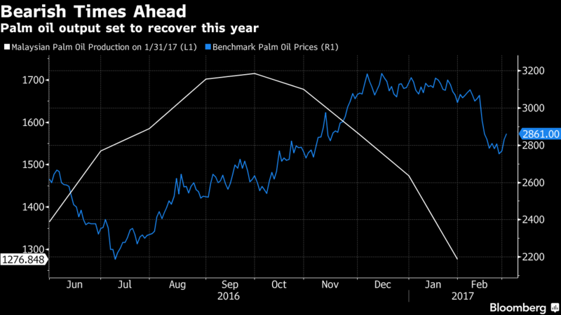
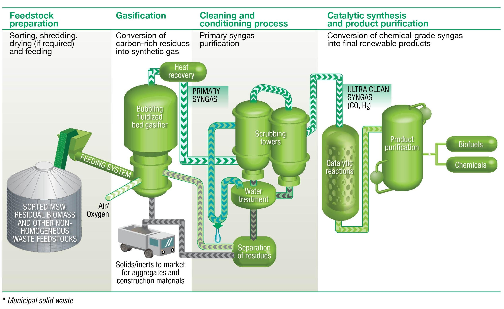

The biofuel production in Indonesia has had an vigorous impact on Indonesian forests which consisted of very rare species which are only found in Indonesia and these forests are eradicated due to development of industries an factories based on biofuel production. Some circumstances included land grabbing and corruption due to which it had a very bad impact on lower class people because their houses were destroyed in order o construct their factories.
The vast areas of Indonesia’s forests are providing food to the people, but because of the bio fuels production plants are having a very bad impact on the people and the quality of the food.It has a very positive impact on economy of Indonesia because it has increased the GDP and has showed betterment in economic condition of the nation but as we know that it has eradicated a lot of peoples land in Indonesia thus overall it has a good impact as well as a bad impact too. But when it comes to workload and labour it should have shown a very positive impact on the social life of people because it has introduced to more job opportunities but many human rights violation took place like making people work in a bad condition. Although it has introduced more job opportunities, women are paid very less compared to men and 60% of day laborers, their wages are very insufficient to meet daily needs.In terms of environment it has had a bad impact because biofuel production a is bad for climate, due to increase in demand bio fuel and increase EU Consumption and lead to land squeezing and more factories led to greenhouse gas emission which caused a bad impact on social life which again led to deforestation and land conversion.
As a conclusion having a good economic impact is not necessary but having a sustained growth is more important like happened in production of biofuel. As a concern biofuel producers should be unbiased towards production and must take care of sustainability of the nation.
By Vitrag and Parth

